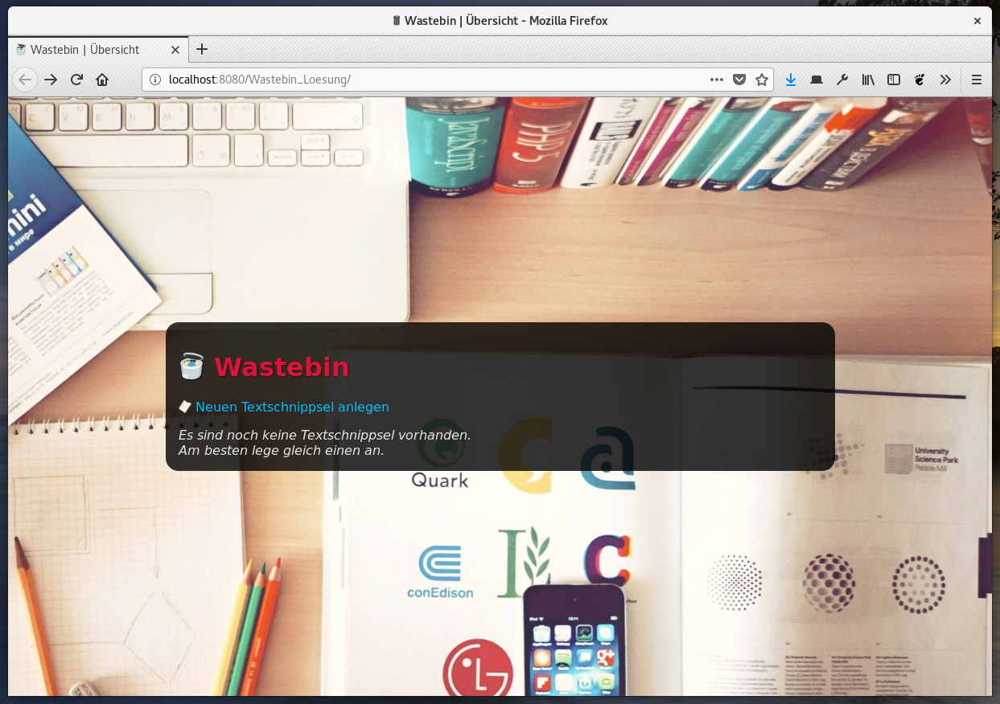

Nachdem du so tapfer die ersten beiden Foliensätze zu â€Grundlagen verteilter Systeme†und â€Enterprise Java Beans†durchgeackert hast, wollen wir diese Mühe gerne belohnen. 🆠Deshalb haben wir hier eine kleine Aufgabe für dich, bei der du die wichtigsten Aspekte von MVC mit Servlets, JSP und EJB nochmal ausprobieren kannst.
Unsere kleine Anwendung heißt â€Wastebin†und hat nur rein zufällig etwas mit dem ähnlich klingenden Plagiat Pastebin zu tun. 🤞🏼 Ähnlich wie dort soll unsere Anwendung dazu genutzt werden, Codeschnippsel zu speichern. Die folgenden Screenshots zeigen, wie die Anwendung aussieht:
|  | |
Der Quellcode ist wie folgt strukturiert:
|
|
|
|
|
|
Die anzupassenden Stellen sind mit â€TODO†und einer kurzen Erklärung gekennzeichnet. Hauptsächlich geht es darum, die EJB an der richtigen Stelle aufzurufen und ein wenig dein Wissen aus Webprogrammierung anzuwenden. 🙂
Erweitere die Anwendung so, dass vorhandene Codeschnippsel nachträglich bearbeitet und gelöscht werden können.